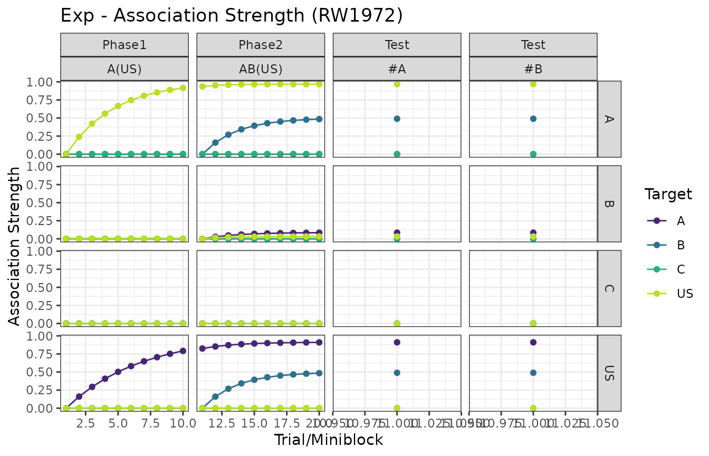
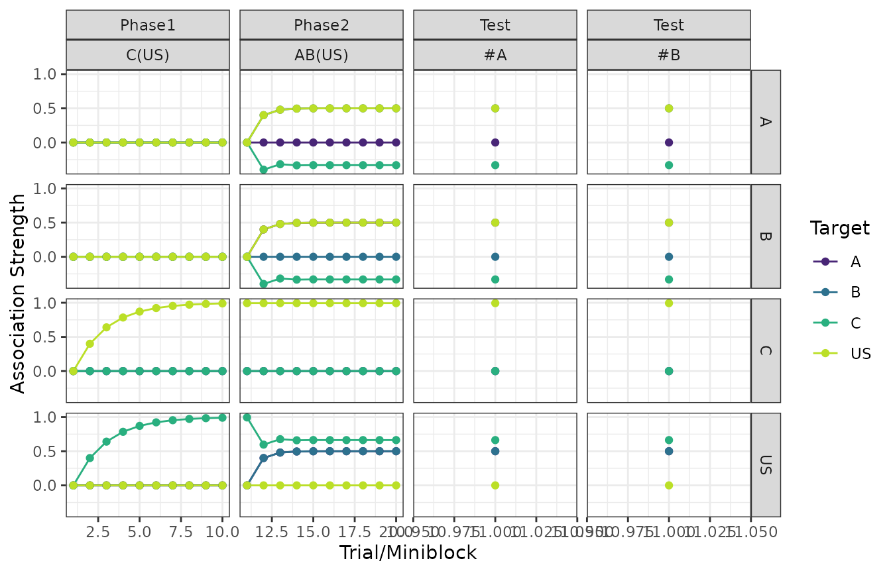
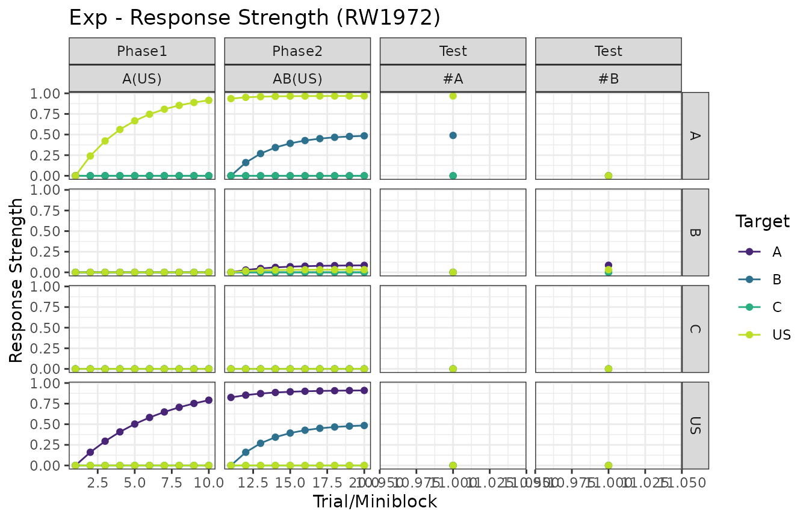
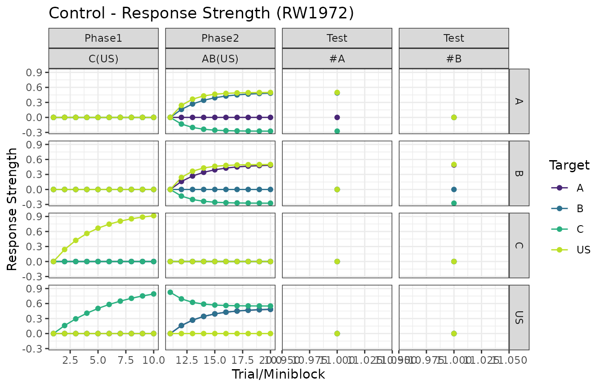
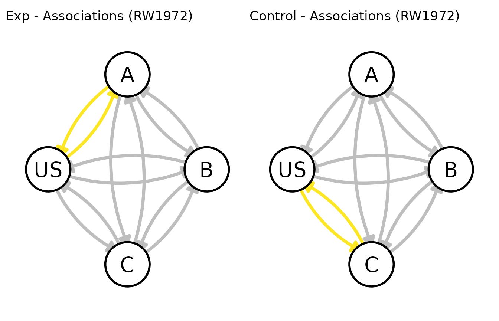
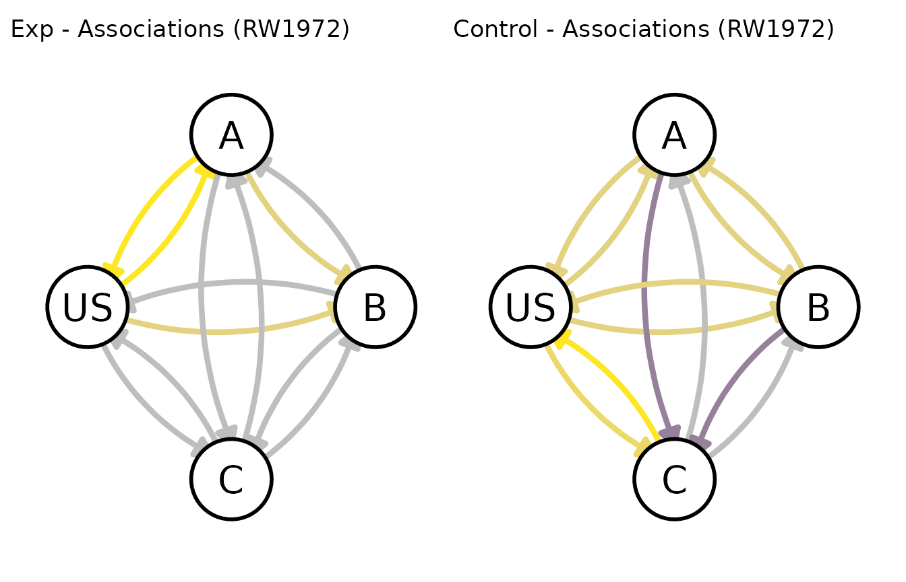

To perform your first simulation you will need:
- A
data.framespecifying the experiment design, and - A list with the parameters for the model you will be using.
The design data.frame
Let’s specify a blocking design.
library(calmr)
#>
#> Attaching package: 'calmr'
#> The following object is masked from 'package:base':
#>
#> parse
my_blocking <- data.frame(
Group = c("Exp", "Control"),
Phase1 = c("10A(US)", "10C(US)"),
R1 = c(FALSE, FALSE),
Phase2 = c("10AB(US)", "10AB(US)"),
R2 = c(FALSE, FALSE),
Test = c("1#A/1#B", "1#A/1#B"),
R3 = c(FALSE, FALSE)
)
# parsing the design and showing the original and what was detected
parsed <- parse_design(my_blocking)
parsed
#> CalmrDesign built from data.frame:
#> Group Phase1 R1 Phase2 R2 Test R3
#> 1 Exp 10A(US) FALSE 10AB(US) FALSE 1#A/1#B FALSE
#> 2 Control 10C(US) FALSE 10AB(US) FALSE 1#A/1#B FALSE
#> ----------------
#> Trials detected:
#> group phase trial_names trial_repeats is_test stimuli
#> 1 Exp Phase1 A(US) 10 FALSE A;US
#> 2 Exp Phase2 AB(US) 10 FALSE A;B;US
#> 3 Exp Test #A 1 TRUE A
#> 4 Exp Test #B 1 TRUE B
#> 5 Control Phase1 C(US) 10 FALSE C;US
#> 6 Control Phase2 AB(US) 10 FALSE A;B;US
#> 7 Control Test #A 1 TRUE A
#> 8 Control Test #B 1 TRUE BA few rules about the design data.frame:
- Each row represents a group.
- The first column contains the group labels.
- The remaining columns are organized in pairs (trials in a phase, and whether to randomize them)
The trials in each phase column are specified using a very rigid notation. A few observations about it:
- Trials are preceded by a number. That number represents the number of times that trial will be given in each phase. “10A(US)” means that the “A(US)” trial will be given 10 times.
- The presence and absence of the unconditioned stimulus are not denoted with the traditional “+” and “-” symbols. Instead, here we use parenthesis to denote “complex” stimuli. These can be thought of as an element with a complex name (i.e., with more than one character). As such, “(US)” specifies a single element to represent the US.
- In the same vein, multiple characters with no parentheses denote individual elements. For example, “AB” implies the presence of two stimuli, A and B.
- The “/” character is used as a trial separator (it does not imply randomization by itself). Thus, “1A/1B” specifies that a single “A” trial and a single “B” trial will be given during that phase. Recall that randomization of trials within a phase is specified by the column after it (above, R1, R2, and R3).
- The “#” character is used to denote probe trials. In contrast to real life, probe trials here entail no update of the model’s associations. As such, probe trials can be used to track the development of key associations, with no repercussion to what the model learns on normal training trials.
If you want to check whether your phase string will work with the
package, you can use phase_parser(). Warning: The function
returns a list with a lot of information used by the models in the
package, but the rule of thumb is that if you see a ton of text, your
phase string is working.
# not specifying the number of AB trials. Error!
phase_parser("AB/10AC")
#> Error in if (is.na(treps)) 1 else treps: argument is of length zero
# putting the probe symbol out of order. Error!
phase_parser("#10A")
#> Error in if (is.na(treps)) 1 else treps: argument is of length zero
# considering a configural cue for elements AB
trial <- phase_parser("10AB(AB)(US)")
# different USs
trial <- phase_parser("10A(US1)/10B(US2)")
# tons of information! Phase parser is meant for internal use only.
# you are better of using `parse_design()` on a design `data.frame`
str(trial)
#> List of 2
#> $ trial_info :List of 2
#> ..$ 10A(US1):List of 8
#> .. ..$ name : chr "A(US1)"
#> .. ..$ repetitions : num 10
#> .. ..$ is_test : logi FALSE
#> .. ..$ periods : chr "A(US1)"
#> .. ..$ nominals :List of 1
#> .. .. ..$ A(US1): chr [1:2] "A" "US1"
#> .. ..$ functionals :List of 1
#> .. .. ..$ A(US1): chr [1:2] "A" "US1"
#> .. ..$ all_nominals : chr [1:2] "A" "US1"
#> .. ..$ all_functionals: chr [1:2] "A" "US1"
#> ..$ 10B(US2):List of 8
#> .. ..$ name : chr "B(US2)"
#> .. ..$ repetitions : num 10
#> .. ..$ is_test : logi FALSE
#> .. ..$ periods : chr "B(US2)"
#> .. ..$ nominals :List of 1
#> .. .. ..$ B(US2): chr [1:2] "B" "US2"
#> .. ..$ functionals :List of 1
#> .. .. ..$ B(US2): chr [1:2] "B" "US2"
#> .. ..$ all_nominals : chr [1:2] "B" "US2"
#> .. ..$ all_functionals: chr [1:2] "B" "US2"
#> $ general_info:List of 5
#> ..$ trial_names : chr [1:2] "A(US1)" "B(US2)"
#> ..$ trial_repeats: num [1:2] 10 10
#> ..$ is_test : logi [1:2] FALSE FALSE
#> ..$ nomi2func : Named chr [1:4] "A" "US1" "B" "US2"
#> .. ..- attr(*, "names")= chr [1:4] "A" "US1" "B" "US2"
#> ..$ func2nomi : Named chr [1:4] "A" "US1" "B" "US2"
#> .. ..- attr(*, "names")= chr [1:4] "A" "US1" "B" "US2"The parameters list
Now we need to pick a model and its parameters.
To get the models currently supported in calmr, you can
call supported_models().
supported_models()
#> [1] "HDI2020" "HD2022" "RW1972" "MAC1975" "PKH1982" "SM2007" "RAND"
#> [8] "ANCCR" "TD"After choosing a model, you can get some default parameters for your
design with get_parameters().
my_pars <- get_parameters(my_blocking, model = "RW1972")
# Increasing the beta parameter for US presentations
my_pars$betas_on["US"] <- .6
my_pars
#> $alphas
#> A B C US
#> 0.4 0.4 0.4 0.4
#>
#> $betas_on
#> A B C US
#> 0.4 0.4 0.4 0.6
#>
#> $betas_off
#> A B C US
#> 0.4 0.4 0.4 0.4
#>
#> $lambdas
#> A B C US
#> 1 1 1 1For a reference on how each model is parametrized, check out the model’s reference page. For example, the reference page for the “RW1972” model is here.
Or, if that many equations tire your eyes, you can consult the model parameter reference.
Simulating
With all of the above, we can run our simulation using the
run_experiment() function. This function also takes extra
arguments to manipulate the number of iterations to run the experiment
for (important for designs with randomized trials), whether to organize
trials in miniblocks, and extra configuration for more complex models
(see the help page for make_experiment() for additional
details).
Below, we keep it simple and run the experiment for a single iteration.
my_experiment <- run_experiment(
my_blocking, # note we do not need to pass the parsed design
model = "RW1972",
parameters = my_pars
)
# returns a `CalmrExperiment` object
class(my_experiment)
#> [1] "CalmrExperiment"
#> attr(,"package")
#> [1] "calmr"
# CalmrExperiment is an S4 class, so it has slots
slotNames(my_experiment)
#> [1] "design" "model" "groups" "parameters" "timings"
#> [6] "experiences" "results" ".model" ".group" ".iter"
# some of the experience given to group Exp on the first (and only) iteration
head(my_experiment@experiences[[1]])
#> model group phase tp tn is_test block_size trial
#> 1 RW1972 Exp Phase1 1 A(US) FALSE 1 1
#> 2 RW1972 Exp Phase1 1 A(US) FALSE 1 2
#> 3 RW1972 Exp Phase1 1 A(US) FALSE 1 3
#> 4 RW1972 Exp Phase1 1 A(US) FALSE 1 4
#> 5 RW1972 Exp Phase1 1 A(US) FALSE 1 5
#> 6 RW1972 Exp Phase1 1 A(US) FALSE 1 6
# the number of times we ran the model (groups x iterations)
length(experiences(my_experiment))
#> [1] 2
# an experiment has results with different levels of aggregation
class(my_experiment@results)
#> [1] "CalmrExperimentResult"
#> attr(,"package")
#> [1] "calmr"
slotNames(my_experiment@results)
#> [1] "aggregated_results" "parsed_results" "raw_results"
# shorthand method to access aggregated_results
results(my_experiment)
#> $associations
#> group phase trial_type trial block_size s1 s2 value model
#> <char> <char> <char> <int> <num> <char> <char> <num> <char>
#> 1: Exp Phase1 A(US) 1 1 A A 0.0000000 RW1972
#> 2: Exp Phase1 A(US) 1 1 A B 0.0000000 RW1972
#> 3: Exp Phase1 A(US) 1 1 A C 0.0000000 RW1972
#> 4: Exp Phase1 A(US) 1 1 A US 0.0000000 RW1972
#> 5: Exp Phase1 A(US) 1 1 B A 0.0000000 RW1972
#> ---
#> 700: Control Test #B 22 2 C US 0.9939534 RW1972
#> 701: Control Test #B 22 2 US A 0.4999999 RW1972
#> 702: Control Test #B 22 2 US B 0.4999999 RW1972
#> 703: Control Test #B 22 2 US C 0.6626356 RW1972
#> 704: Control Test #B 22 2 US US 0.0000000 RW1972
#>
#> $responses
#> group phase trial_type trial block_size s1 s2 value model
#> <char> <char> <char> <int> <num> <char> <char> <num> <char>
#> 1: Exp Phase1 A(US) 1 1 A A 0 RW1972
#> 2: Exp Phase1 A(US) 1 1 A B 0 RW1972
#> 3: Exp Phase1 A(US) 1 1 A C 0 RW1972
#> 4: Exp Phase1 A(US) 1 1 A US 0 RW1972
#> 5: Exp Phase1 A(US) 1 1 B A 0 RW1972
#> ---
#> 700: Control Test #B 22 2 C US 0 RW1972
#> 701: Control Test #B 22 2 US A 0 RW1972
#> 702: Control Test #B 22 2 US B 0 RW1972
#> 703: Control Test #B 22 2 US C 0 RW1972
#> 704: Control Test #B 22 2 US US 0 RW1972If you are an advanced R user you will be able to dig into the data straight away. However, the package also includes some methods to get a quick look at the results.
Plotting
Let’s use plot method to create some plots. Each model
supports different types of plots according to the results they can
produce (e.g., associations, responses, saliences, etc.)
# get all the plots for the experiment
plots <- plot(my_experiment)
names(plots)
#> [1] "Exp - Association Strength (RW1972)"
#> [2] "Control - Association Strength (RW1972)"
#> [3] "Exp - Response Strength (RW1972)"
#> [4] "Control - Response Strength (RW1972)"
# or get a specific type of plot
specific_plot <- plot(my_experiment, type = "associations")
names(specific_plot)
#> [1] "Exp - Association Strength (RW1972)"
#> [2] "Control - Association Strength (RW1972)"
# show which plots are supported by the model we are using
supported_plots("RW1972")
#> [1] "associations" "responses"In this case, the RW model supports both associations (associations) and responses (responses).
Stimulus associations
The columns in the plots below are the phases of the design and the rows denote the source of the association.
The colors within each panel determine the target of the association. For example, associations towards the US are shown in yellow.
plot(my_experiment, type = "associations")
#> $`Exp - Association Strength (RW1972)`
#>
#> $`Control - Association Strength (RW1972)`
Responding
Fairly similar to the above, but responding is a function of the stimuli presented in each trial.
plot(my_experiment, type = "responses")
#> $`Exp - Response Strength (RW1972)`
#>
#> $`Control - Response Strength (RW1972)`
Graphing
You can also take a look at the state of the model’s associations at
any point during the experiment, using the graph method.
The graphs are created using the ggnetwork package.
# some general options for ggnetwork
my_graph_opts <- get_graph_opts("small")
# passing the argument t to specify the trial we're interested in.
# end of acquisition
patch_graphs(graph(my_experiment, t = 10, options = my_graph_opts))
# end of blocking
patch_graphs(graph(my_experiment, t = 20, options = my_graph_opts))
Final thoughts
The design philosophy behind calmr package revolves
around simplicity and ease of access.
The user only needs to specify a design as well as a model to generate model predictions. In fact, there is also an app that lets users access the basic package functionality using a GUI.
That said, the package has plenty of features for more advanced R users. If you’re one of them, make sure to check the other vignettes when you are ready.